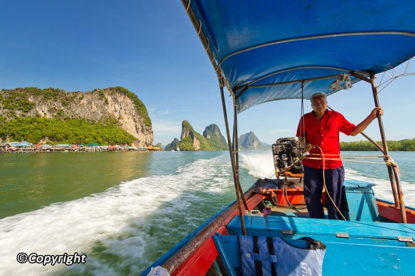
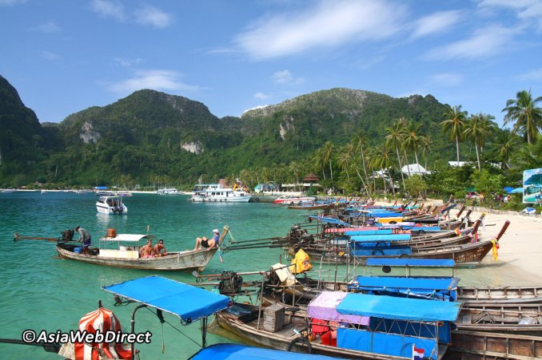

If there is one must-see sight in Bangkok, it's the dazzling, spectacular Grand Palace, undoubtedly the city's most famous landmark. Built in 1782 - and for 150 years the home of the Thai King, the Royal court and the administrative seat of government - the Grand Palace continues to awe visitors with its beautiful architecture and intricate detail - a proud salute to the creativity and craftsmanship of Thai people. Within its walls were also the Thai war ministry, state departments, and even the mint. Today, the complex remains the spiritual heart of the Thai Kingdom. It is highly suggested that visitors dress politely when visiting the Grand Palace; entry can be refused to those dressed incorrectly.
Located north east of Phuket, Phang Nga Bay is an almost unique site in the world (only Ha Long Bay in Vietnam presents some similarity). A distinctive feature of Phang Nga Bay is the sheer limestone cliffs that jut vertically out of the emerald green water. James Bond Island and Koh Pannyi are just two of the more famous spots in this bay. By far the best means of enjoying the spectacular scenery, with only brief encounters with the tourist crowds as James Bond and Koh Pannyi, is to take one of the boat trips from the northern end of Phuket. A leisurely day trip cruising through the dramatic limestone islands, occasionally stopping to enjoy quiet beaches, is far more rewarding than the standard bus-boat tour.
This group of rocks and islands lies 90 minutes by speedboat off the coast of Phang-Nga, or eight or more hours by slow boat from Phuket. The area was declared a Marine National Park in 1982 and consequently remains largely undeveloped. Derived from the Malay term 'sembilan', meaning 'nine', Similan refers to the nine main islands in the group. The waters surrounding the Similans are teeming with tropical fish, colourful coral, and offer exceptional underwater visibility. As a result, the diving is generally considered to be the best in the region, and compares favourably with some of the best in the world.
Bangkok's colourful floating markets are familiar to many through the ubiquitous photos in tourist guides and travel books. Even though transactions are more concerned with tourists rather than locals these days, the floating market boats are still piled high with tropical fruit and vegetables, fresh, ready-to-drink coconut juice and local food cooked from floating kitchens located right on the boat.
The Phi Phi Islands are some of the loveliest in Southeast Asia. Just a 45-minute speedboat jaunt and a 90-minute ferryboat ride from Phuket, these picture-postcard islands offer the ultimate tropical getaway. Classic beaches, stunning rock formations, and vivid turquoise waters teeming with colourful marine life - it's paradise perfected. There are two islands, Phi Phi Don and Phi Phi Leh. The larger and inhabited, Phi Phi Don attracts hundreds of visitors to stay on its lovely shores. For many, Phi Phi Don is the last word in hedonistic nightlife.

Doi Suthep is a constant part of life in Chiang Mai. A Thai saying goes, "If you haven't tasted Khao Soi or seen the view from Doi Suthep, you haven't been to Chiang Mai." This regal mountain overlooks the city from the northwest, providing commanding views of surrounding countryside and Chiang Mai from its summit.
Where the water glows in Thailand Leave the sex tourism and moon parties behind for night-dives and jungle raves in Koh Lanta, an untarnished beach paradise where the ocean teems with whale sharks, manta rays and bioluminescent algae
In 400 years, Ayutthaya went from a prosperous trade and political capital to a completely defaced city – plundered, burned and abandoned to ruin. The city was under a constant power struggle with neighbouring Burma; nevertheless it remained a flourishing centre for regional trade and a burgeoning metropolis where art and culture merged. Exhibiting sophisticated techniques and styles, Ayutthaya’s architectural heritage is an amalgam of Lopburi, Sukhothai, Dvaravati, U-Thong, ancient Khmer and Persian styles. Today, Ayutthaya’s temple and palace ruins serve as a powerful reminder of Siam’s glorious past as well as haunting memories of one of the darkest periods in Thai history.
Wat Arun, locally known as Wat Chaeng, is situated on the west (Thonburi) bank of the Chao Phraya River. It is believed that after fighting his way out of Ayutthaya, which was besigned by a Burmese army at the time, King Taksin arrived at this temple just as dawn was breaking. He later had the temple renovated and renamed it Wat Chaeng, the Temple of the Dawn.
A UNESCO World Heritage Site, Khao Yai is Thailand’s second largest (2,168sqkm) and one of the most visited national parks. It spreads across four provinces, namely Saraburi (west), Nakhon Nayok (east), Nakhon Ratchasima (north) and Prachinburi (east). The highest peak, at Khao Rom, is 1,351 metres above sea level. Blessed with a lush, mountainous landscape, with fertile valleys, pounding waterfalls and rich biodiversity, Khao Yai is a year-round getaway destination just three hours’ drive from Bangkok.


© Sernel Miranda Asunto (2019)